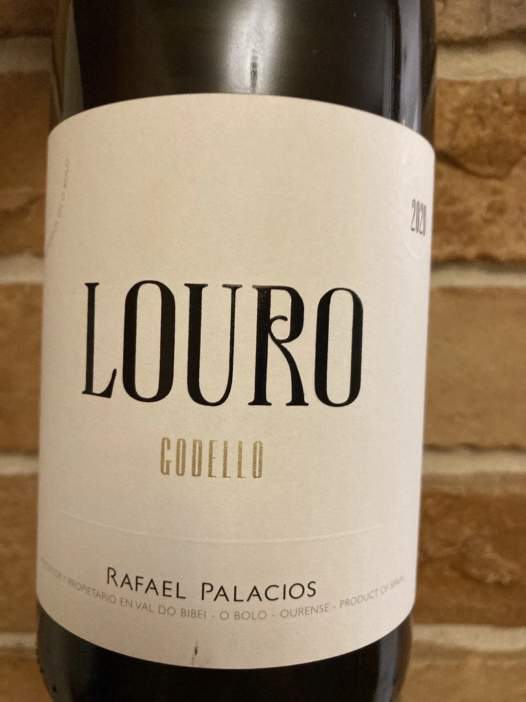

- Type
- White Still, Dry
- Producer
- Descendientes de Jose Palacios
- Vintage
- 2020
- Location
- Spain, Valdeorras DO
- Grapes
- Godello
- Alcohol
- 14
- Sugar
- 2.2
- Price
- 540 UAH, 619 UAH
- Cellar
- 1 bottle
Ratings
2021-12-16 - 8.00
Always stylish and unique. Sophisticated bouquet full of nuts, honey, peach and other yellow fruits, plus aloe vera. Slightly mineral profile, pleasant salinity on the palate. Great structure and volume, well balanced, fresh, 14abv is something you don’t notice right away. Great value. Goes wonderful solo, with grilled white fish - it’s perfect.